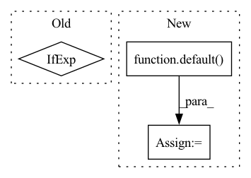

Pattern ID :30433
Before Change
sparse_layer = cast_tuple(sparse_attn, depth)
for _, sparse_attn in zip(range(depth), sparse_layer):
attn_class = Attention if not sparse_attn else partial(SparseAttention, sparse_attn_global_indices = sparse_attn_global_indices)
layers.append(nn.ModuleList([
PreNorm(dim, attn_class(dim, causal = causal, seq_len = seq_len, heads = heads, dim_head = dim_head, dropout = attn_dropout, noncausal_attn_len = noncausal_attn_len)),After Change
super().__init__()
layers = nn.ModuleList([])
sparse_layer = cast_tuple(sparse_attn, depth)
attn_types = default( attn_types, ("full",))
attn_type_layer = islice(cycle(attn_types), depth)
for _, sparse_attn, attn_type in zip(range(depth), sparse_layer, attn_type_layer):
if attn_type == "full":In pattern: SUPERPATTERN
Frequency: 5
Non-data size: 3
Instances Fragment ID: 90011343
Project Name: lucidrains/dalle-pytorch
Commit Name: de732e8756750e161f0e51fac8baf9bcdb13182e
Time: 2021-02-10
Author: lucidrains@gmail.com
File Name: dalle_pytorch/transformer.py
M Class Name: Transformer
N Class Name: Transformer
M Method Name: __init__(1)
N Method Name: __init__(1)
M Parent Class: nn.Module
N Parent Class: nn.Module
M File Name: dalle_pytorch/transformer.py
N File Name: dalle_pytorch/transformer.py
M Start Line: 67
M End Line: 68
N Start Line: 75
N End Line: 92
Before Change
*[block(dim, fill[i]) for i in range(depth)],
Pass(nn.LayerNorm(dim)),
Pass(nn.Linear(dim, dim_out)),
GlobalPool(mean=mean) if pool else Lambda(lambda x: x[1]),
)
def forward(self, x):After Change
**kwargs
):
super().__init__()
dim_out = default( dim_out, dim)
if isinstance(fill,(float,int)):
fill = [fill] * depth
Fragment ID: 90011336
Project Name: lucidrains/lie-transformer-pytorch
Commit Name: a049c07481f39e254f161dbb403570c545d602f9
Time: 2021-01-23
Author: lucidrains@gmail.com
File Name: lie_transformer_pytorch/lie_transformer_pytorch.py
M Class Name: LieTransformer
N Class Name: LieTransformer
M Method Name: __init__(16)
N Method Name: __init__(17)
M Parent Class: nn.Module
N Parent Class: nn.Module
M File Name: lie_transformer_pytorch/lie_transformer_pytorch.py
N File Name: lie_transformer_pytorch/lie_transformer_pytorch.py
M Start Line: 322
M End Line: 347
N Start Line: 337
N End Line: 358
Before Change
else:
pred = model_output
target = noise if not predict_x_start else x_start
loss = self.loss_fn(pred, target)
After Change
lowres_cond_img_noisy = None
if exists(lowres_cond_img):
lowres_aug_times = default( lowres_aug_times, times)
lowres_cond_img_noisy = self.q_sample(x_start = lowres_cond_img, t = lowres_aug_times, noise = torch.randn_like(lowres_cond_img))
// get prediction
Fragment ID: 90011335
Project Name: lucidrains/imagen-pytorch
Commit Name: 74e749a2150e273890af8912b04b156f24127c88
Time: 2022-05-25
Author: lucidrains@gmail.com
File Name: imagen_pytorch/imagen_pytorch.py
M Class Name: Imagen
N Class Name: Imagen
M Method Name: p_losses(4)
N Method Name: p_losses(4)
M Parent Class: BaseGaussianDiffusion
N Parent Class: BaseGaussianDiffusion
M File Name: imagen_pytorch/imagen_pytorch.py
N File Name: imagen_pytorch/imagen_pytorch.py
M Start Line: 1251
M End Line: 1278
N Start Line: 1217
N End Line: 1253
Before Change
self.to_q = nn.Linear(dim, dim, bias = False)
kv_dim = self.dim_head if one_kv_head else dim
self.to_k = nn.Linear(dim, kv_dim, bias = False)
self.proj_k = nn.Parameter(init_(torch.zeros(seq_len, k)))
After Change
self.heads = heads
dim_head = default( dim_head, dim // heads)
self.dim_head = dim_head
self.to_q = nn.Linear(dim, dim_head * heads, bias = False)
Fragment ID: 90011345
Project Name: lucidrains/linformer
Commit Name: 6449082dbf683beae01505350def842814c3a965
Time: 2020-07-12
Author: lucidrains@gmail.com
File Name: linformer/linformer.py
M Class Name: LinformerSelfAttention
N Class Name: LinformerSelfAttention
M Method Name: __init__(9)
N Method Name: __init__(8)
M Parent Class: nn.Module
N Parent Class: nn.Module
M File Name: linformer/linformer.py
N File Name: linformer/linformer.py
M Start Line: 52
M End Line: 56
N Start Line: 47
N End Line: 71
Before Change
for ind, (attn, ff) in enumerate(zip(self.attn_layers, self.ff_layers)):
layer_num = ind + 1
use_memory = layer_num in self.memory_layers
memories = map(next, (mem_iter, lmem_iter)) if use_memory else None
if use_memory:
hiddens.append(x)After Change
num_memory_layers = len(self.memory_layers)
mem = default( mem, lambda: torch.empty(num_memory_layers, b, 0, d, **to(x)))
lmem = default(lmem, lambda: torch.empty(b, 0, d, **to(x)))
mem_len, lmem_len = map(lambda t: t.shape[2], (mem, lmem))
total_len = mem_len + lmem_len + self.seq_len
pos_emb = self.pos_emb[:, (self.seq_len - t):total_len]
mem_iter = iterate_tensor(mem)
hiddens = []
Fragment ID: 90011344
Project Name: lucidrains/memory-transformer-xl
Commit Name: 288be75552a43b02c0c272ce7da8157e73c78d2d
Time: 2020-07-24
Author: lucidrains@gmail.com
File Name: memory_transformer_xl/memory_transformer_xl.py
M Class Name: MemoryTransformerXL
N Class Name: MemoryTransformerXL
M Method Name: forward(5)
N Method Name: forward(5)
M Parent Class: nn.Module
N Parent Class: nn.Module
M File Name: memory_transformer_xl/memory_transformer_xl.py
N File Name: memory_transformer_xl/memory_transformer_xl.py
M Start Line: 379
M End Line: 395
N Start Line: 385
N End Line: 400